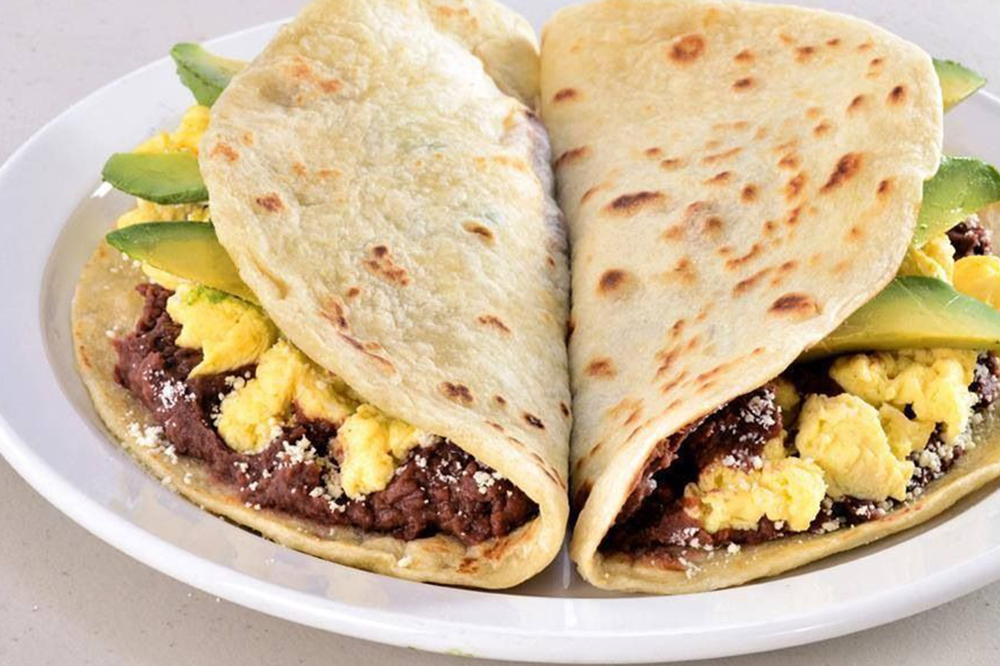
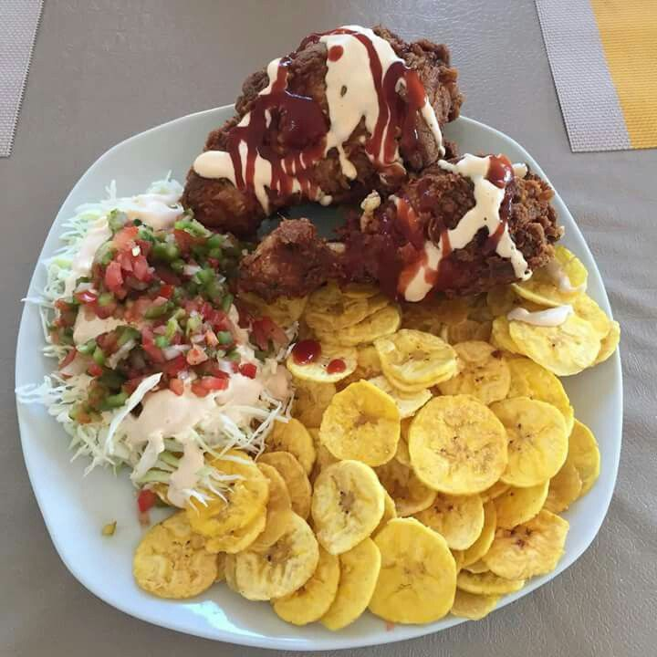

Honduras: Un Tesoro de Centroamérica
Ubicación Geográfica
Honduras está situada en América Central, limitando al norte con el mar Caribe, al sur con El Salvador y Nicaragua, al este con Nicaragua y al oeste con Guatemala. Es conocida por su diversidad natural y cultural.
Capital y Ciudades Importantes
- Tegucigalpa: La capital, situada en el centro-sur del país.
- San Pedro Sula: Centro económico del país
- La Ceiba y Roatán: Famosas por sus playas y turismo.
Historia
Honduras tiene una rica herencia cultural maya. Durante la época colonial, fue parte del Virreinato de la Nueva España. Obtuvo su independencia de España el 15 de septiembre de 1821.
mas sobre la historia de honduras
Clima
El clima varía entre tropical en las costas y templado en las montañas.
Economía
La economía hondureña está basada en la agricultura (banano, café, palma africana) y el turismo. Las exportaciones textiles y de maquilas también son esenciales.
Turismo
- Un importante sitio arqueológico de la civilización maya.
- Destino turístico para buceo y snorkeling
- Excelente para ecoturismo.
Ruinas de Copán:
Islas de la Bahía:
Parque Nacional La Tigra
Cultura
La cultura hondureña es una mezcla de influencias indígenas, africanas y españolas. Las festividades como la Feria Juniana en San Pedro Sula y la Semana Santa son muy importantes.
Explorar CulturaDatos Curiosos
Gastronomía
Entre los platos típicos destacan:
- Tortillas de harina rellenas de frijoles, queso y crema.
- Sopa hecha con coco, mariscos y especias.
- Plátano frito acompañado de carne y ensalada.
Baleadas:

Sopa de caracol:

Tajadas:

Idiomas
El español es el idioma oficial, pero también se hablan lenguas indígenas como el garífuna y el miskito.
Moneda
La moneda oficial es el Lempira (HNL).